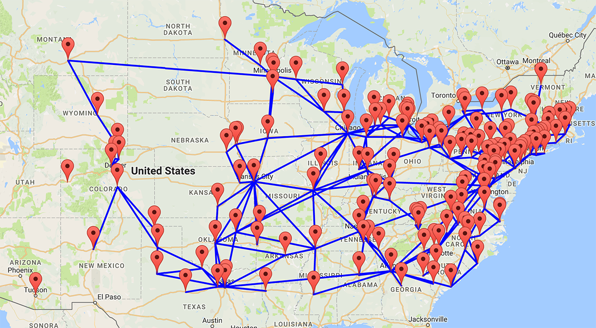

Internet Atlas to NS2
Internet Atlas to NS2 is a continuation of Internet Atlas, which provides a geographically anchored representation of the physical Internet including (i) nodes (e.g., hosting facilities and data centers), (ii) conduits/links that connect these nodes, and (iii) relevant meta data (e.g., source provenance).
This tool adds the feature of extrapolating the generated map to a Network Simulator 2 topology and allows you to customize it by filtering the topology based on geo-coordinates. The customized map of network topology can be converted into a Network Simulator script that can then be run on an NS engine.
Download the Code
To use this tool, (obtain the source code from /deterlab/library/geocoder) and copy it to your local workstation. Then following these instructions:
Prerequisites
- Python above version 2.7. Note: If you are using Python 3, you will need to convert the syntax of the geocoding.py script and troubleshoot any bugs the conversion may introduce.
- pip (to install the required package)
-
Install the geocoder Python package via pip:
sudo pip install geocoder
How To
Run the python script
Run the geocoding python script. You only need to run this once - if you see geocoded.json in the source directory, you may skip this step.
python geocoding.py
Using the form
Run python's small server locally to host the Internet Atlas form, fill out the form to generate the desired map and then download the .NS file of your new topology:
-
Run the following from the
montagedirectory:python -m SimpleHTTPServer & -
Launch a browser (preferably a recent version of Google Chrome, Firefox, or Safari).
-
In a browser window, go to:
http://localhost:8000/home.html -
Specify any of the parameters of your choice in the web page. Remember to include the minus sign (-) if applicable.
For example, to target nodes North and East of Tucson, AZ, you would enter 32.2217 in the North field and -110.9265 in the East field.
-
Click Generate Map to get a preview of the topology.
The above parameters may generate a map such as this:

-
Once you are satisfied with the topology, click Generate NS File to download the corresponding .NS file.
Further details
Internet Atlas is a visualization and analysis portal for diverse Internet measurement data.
Initial ventures include but are not limited to:
- R. Durairajan, S. Ghosh, X. Tang, P. Barford, and B. Eriksson. Internet Atlas: A Geographic Database of the Internet. In Proceedings of ACM HotPlanet, 2013.
- R. Durairajan, P. Barford, J.Sommers and W. Willinger. InterTubes: A Study of the US Long-haul Fiber-optic Infrastructure. In Proceedings of ACM SIGCOMM, 2015.